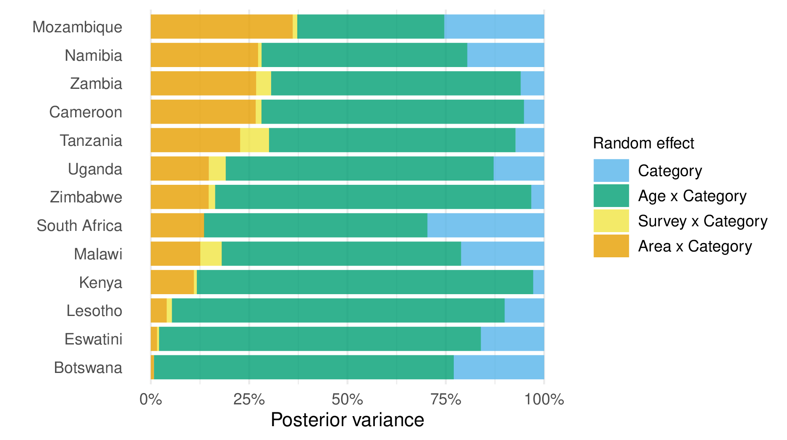
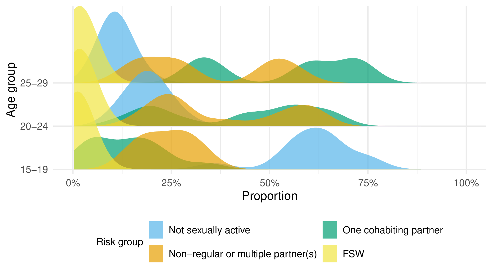

B A model for risk group proportions
B.1 The Global AIDS Strategy
| Prioritisation strata | Criterion |
|---|---|
| Low | 0.3-1.0% incidence and low-risk behaviour, or <0.3% incidence and high-risk behaviour |
| Moderate | 1.0-3.0% incidence and low-risk behaviour, or 0.3-1.0% incidence and high-risk behaviour |
| High | 1.0-3.0% incidence and high-risk behaviour |
| Very high | >3.0% incidence |
| Intervention | Low | Moderate | High | Very High |
|---|---|---|---|---|
| Condoms and lube for those with non-regular partners(s), unknown STI status, not on PrEP | 50% | 70% | 95% | 95% |
| STI screening and treatment | 10% | 10% | 80% | 80% |
| Access to PEP | - | - | 50% | 90% |
| PrEP use | - | 5% | 50% | 50% |
| Economic empowerment | - | - | 20% | 20% |
B.2 Household survey data
| Type | Year | TS question | Sample size | ||||
|---|---|---|---|---|---|---|---|
| 15-19 | 20-24 | 25-29 | Total | ||||
| Botswana | |||||||
| BAIS | 2013 | ✓ | 557 | 588 | 649 | 1794 | |
| Total | 557 | 588 | 649 | 1794 | |||
| Cameroon | |||||||
| DHS | 2004 | ✗ | 2678 | 2210 | 1732 | 6620 | |
| DHS | 2011 | ✗ | 3588 | 3115 | 2656 | 9359 | |
| PHIA | 2017 | ✗ | 2140 | 1923 | 1851 | 5914 | |
| DHS | 2018 | ✓ | 3349 | 2463 | 2345 | 8157 | |
| Total | 11755 | 9711 | 8584 | 30050 | |||
| Kenya | |||||||
| DHS | 2003 | ✗ | 1819 | 1709 | 1391 | 4919 | |
| DHS | 2008 | ✗ | 1767 | 1743 | 1420 | 4930 | |
| DHS | 2014 | ✗ | 2861 | 2534 | 2858 | 8253 | |
| Total | 6447 | 5986 | 5669 | 18102 | |||
| Lesotho | |||||||
| DHS | 2004 | ✗ | 1761 | 1456 | 1026 | 4243 | |
| DHS | 2009 | ✗ | 1834 | 1545 | 1195 | 4574 | |
| DHS | 2014 | ✗ | 1537 | 1293 | 1069 | 3899 | |
| PHIA | 2017 | ✓ | 1156 | 1202 | 1054 | 3412 | |
| Total | 6288 | 5496 | 4344 | 16128 | |||
| Mozambique | |||||||
| AIS | 2009 | ✗ | 1031 | 1106 | 987 | 3124 | |
| DHS | 2011 | ✗ | 3065 | 2468 | 2340 | 7873 | |
| AIS | 2015 | ✗ | 1554 | 1390 | 1080 | 4024 | |
| Total | 5650 | 4964 | 4407 | 15021 | |||
| Malawi | |||||||
| DHS | 2000 | ✗ | 2914 | 2998 | 2358 | 8270 | |
| DHS | 2004 | ✗ | 2407 | 2823 | 2135 | 7365 | |
| DHS | 2010 | ✗ | 5032 | 4387 | 4309 | 13728 | |
| DHS | 2015 | ✓ | 5273 | 5094 | 3976 | 14343 | |
| PHIA | 2016 | ✓ | 1646 | 1934 | 1511 | 5091 | |
| Total | 17272 | 17236 | 14289 | 48797 | |||
| Namibia | |||||||
| DHS | 2000 | ✗ | 1428 | 1313 | 1099 | 3840 | |
| DHS | 2006 | ✗ | 2203 | 1870 | 1544 | 5617 | |
| DHS | 2013 | ✗ | 1852 | 1709 | 1482 | 5043 | |
| PHIA | 2017 | ✓ | 1491 | 1525 | 1370 | 4386 | |
| Total | 6974 | 6417 | 5495 | 18886 | |||
| Eswatini | |||||||
| DHS | 2006 | ✗ | 1265 | 1027 | 731 | 3023 | |
| PHIA | 2017 | ✗ | 1031 | 895 | 811 | 2737 | |
| Total | 2296 | 1922 | 1542 | 5760 | |||
| Tanzania | |||||||
| AIS | 2003 | ✗ | 1466 | 1377 | 1270 | 4113 | |
| AIS | 2007 | ✗ | 2137 | 1676 | 1509 | 5322 | |
| DHS | 2010 | ✗ | 2221 | 1860 | 1613 | 5694 | |
| AIS | 2012 | ✗ | 2474 | 1923 | 1815 | 6212 | |
| Total | 8298 | 6836 | 6207 | 21341 | |||
| Uganda | |||||||
| DHS | 2000 | ✗ | 1687 | 1541 | 1326 | 4554 | |
| DHS | 2006 | ✗ | 1948 | 1661 | 1406 | 5015 | |
| AIS | 2011 | ✗ | 2451 | 2164 | 1921 | 6536 | |
| DHS | 2011 | ✗ | 2025 | 1664 | 1614 | 5303 | |
| DHS | 2016 | ✓ | 4276 | 3782 | 3014 | 11072 | |
| PHIA | 2016 | ✗ | 3289 | 3059 | 2574 | 8922 | |
| Total | 15676 | 13871 | 11855 | 41402 | |||
| South Africa | |||||||
| DHS | 2016 | ✓ | 1505 | 1408 | 1397 | 4310 | |
| Total | 1505 | 1408 | 1397 | 4310 | |||
| Zambia | |||||||
| DHS | 2007 | ✗ | 1598 | 1405 | 1373 | 4376 | |
| DHS | 2013 | ✗ | 3685 | 3036 | 2789 | 9510 | |
| PHIA | 2016 | ✓ | 2120 | 2045 | 1619 | 5784 | |
| DHS | 2018 | ✓ | 3112 | 2687 | 2166 | 7965 | |
| Total | 10515 | 9173 | 7947 | 27635 | |||
| Zimbabwe | |||||||
| DHS | 1999 | ✗ | 1468 | 1230 | 1011 | 3709 | |
| DHS | 2005 | ✗ | 2128 | 1943 | 1438 | 5509 | |
| DHS | 2010 | ✗ | 1966 | 1796 | 1680 | 5442 | |
| DHS | 2015 | ✓ | 2154 | 1779 | 1647 | 5580 | |
| PHIA | 2016 | ✓ | 2114 | 1817 | 1573 | 5504 | |
| Total | 9830 | 8565 | 7349 | 25744 | |||
| Total | 103063 | 92173 | 79734 | 274970 | |||
| Survey | Reason for exclusion |
|---|---|
| Mozambique 2003 DHS | No GPS coordinates available to place survey clusters within districts. |
| Tanzania 2015 DHS | Insufficient sexual behaviour questions. |
| Uganda 2004 AIS | Unable to download region boundaries. |
| Zambia 2002 DHS | No GPS coordinates available to place survey clusters within districts. |
B.3 Spatial analysis levels
| Country | Number of areas | Analysis level |
|---|---|---|
| Botswana | 27 | Health district |
| Cameroon | 58 | Department |
| Kenya | 47 | County |
| Lesotho | 10 | District |
| Mozambique | 161 | District |
| Malawi | 33 | Health district and cities |
| Namibia | 38 | District |
| Eswatini | 4 | Region |
| Tanzania | 195 | District |
| Uganda | 136 | District |
| South Africa | 52 | District |
| Zambia | 116 | District |
| Zimbabwe | 63 | District |
B.4 Survey questions and risk group allocation
| Variable(s) | Description |
|---|---|
| \(\texttt{v501}\) | Current marital status of the respondent. |
| \(\texttt{v529}\) | Computed time since last sexual intercourse. |
| \(\texttt{v531}\) | Age at first sexual intercourse–imputed. |
| \(\texttt{v766b}\) | Number of sexual partners during the last 12 months (including husband). |
| \(\texttt{v767[a, b, c]}\) | Relationship with last three sexual partners. Options are: spouse, boyfriend not living with respondent, other friend, casual acquaintance, relative, commercial sex worker, live-in partner, other. |
| \(\texttt{v791a}\) | Had sex in return for gifts, cash or anything else in the past 12 months. (Asked only to women 15-24 who are not in a union.) |
| Variable(s) | Description |
|---|---|
| \(\texttt{part12monum}\) | Number of sexual partners during the last 12 months (including husband). |
| \(\texttt{part12modkr}\) | Reason for leaving blank. |
| \(\texttt{partlivew[1, 2, 3]}\) | Does the person you had sex with live in this household? |
| \(\texttt{partrelation[1, 2, 3]}\) | Relationship with last three sexual partners. Options are: husband, live-in partner, partner (not living with), ex-spouse/partner, friend/acquaintance, sex worker, sex worker client, stranger, other, don’t know, refused. |
| \(\texttt{sellsx12mo}\) | Had sex for money and/or gifts in the last 12 months. |
| \(\texttt{buysx12mo}\) | Paid money or given gifts for sex in the last 12 months. |
B.5 Additional figures

Figure B.1: The proportion of posterior variance explained by each random effect, calculated as a ratio of the random effect variance posterior mean to the sum of all random effect variance posterior means. To allow calculation of this metric by country, the model was run for each country individually.

Figure B.2: For the 20-24 and 25-29 age groups, the proportion of AGYW in the one cohabiting partner and non-regular or multiple partner(s) risk groups was bimodal.
References
UNAIDS. 2021b. “Global AIDS strategy 2021–2026. End inequalities. End AIDS.”